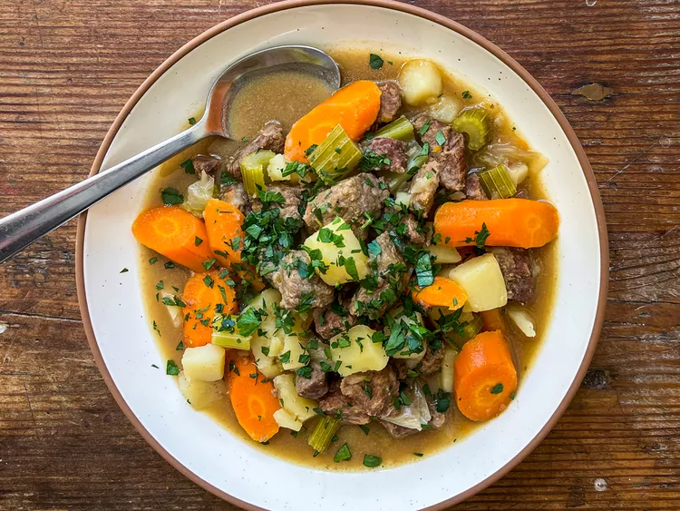

Warm your soul with this hearty beef stew, packed with tender chunks of beef, savory vegetables, and rich, flavorful broth. Perfect for a cozy dinner, this classic dish will fill your kitchen with irresistible aromas and your heart with comfort. Easy to prepare and utterly satisfying, it's the ultimate comfort food for any season.
